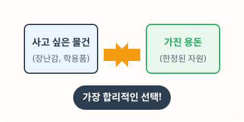
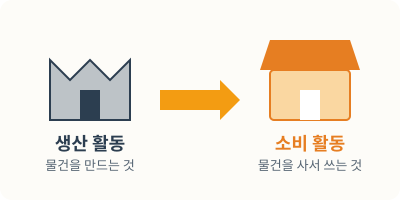
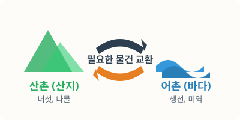

사회: 경제활동과 지역 간 교류
선택의 문제부터 지역 간 상호 의존까지, 핵심 개념을 완벽하게 정리해 보세요.
1회. 경제활동과 합리적 선택
1. 경제활동과 선택의 문제
(1) 경제활동의 의미
사람들이 생활에 필요한 여러 가지를 만들고 사용하는 것과 관련된 모든 활동을 말합니다.
(2) 선택의 의미
여럿 가운데서 필요한 것을 골라 뽑는 것을 말합니다.
(3) 경제활동을 하며 겪는 선택의 문제
- 지하철을 탈까? 버스를 탈까?
- 어떤 반찬을 만들어 팔까?
- 오늘은 어떤 프로그램을 시청해 볼까?

2. 선택의 문제가 일어나는 까닭과 희소성
(1) 선택의 문제가 일어나는 까닭
사람이 쓸 수 있는 돈이나 자원은 한정되어 있으므로 원하는 것을 모두 가질 수는 없습니다. 경제활동에서 선택의 문제가 일어나는 까닭은 자원의 희소성 때문입니다.
(2) 자원의 희소성
사람들의 필요나 욕구에 비하여 자원의 양이 상대적으로 부족한 상태를 말합니다.
2회. 합리적 선택의 필요성
1. 선택을 후회했던 경험과 만족했던 경험
(1) 경제활동에서 선택의 결과
경제활동을 하면서 자원을 낭비하거나 나의 선택에 후회하는 경우도 있고, 선택에 만족하는 경우도 있습니다.
2. 합리적 선택
(1) 합리적 선택의 의미
여러 가지 기준을 고려하여 돈이나 시간 등 자원의 낭비를 막고 큰 만족감을 얻을 수 있는 선택을 말합니다.
(2) 합리적 선택이 필요한 까닭
- 돈과 시간 등의 자원을 아낄 수 있기 때문입니다.
- 만족감과 즐거움을 얻을 수 있기 때문입니다.
3회. 합리적 선택의 방법
1. 합리적 선택의 방법
(1) 필요한 물건과 가진 돈 확인하기
내게 필요한 물건을 생각해 보고, 가진 돈이 얼마인지 확인합니다.
(2) 정보 수집하기
사려는 물건의 가격, 디자인, 특징 등의 정보를 다양한 방법으로 수집합니다.
(3) 선택 기준 세우기
물건을 선택할 때 고려할 기준을 세웁니다. (가격, 필요성, 품질, 기능)
(4) 물건 평가하고 선택하기
선택 기준에 따라 각 물건들의 특징을 꼼꼼하게 살펴봅니다.
(5) 선택 되돌아보기
자신이 합리적 선택을 한 것인지 자신의 선택을 되돌아보고 평가합니다.
2. 합리적 선택의 결과
(1) 자신의 선택을 되돌아보기
- 꼭 필요한 선택이었는지 생각해 봅니다.
- 편리함이나 즐거움 등과 같은 만족을 얻었는지 생각해 봅니다.
(2) 합리적 선택을 할 때의 좋은 점
자신에게 알맞은 물건을 골라 큰 만족을 얻을 수 있습니다.
4회. 생산과 소비의 의미
1. 생산과 소비 활동
(1) 생산과 소비의 의미
- 생산: 생활에 필요한 물건을 만들거나 서비스를 제공하는 활동
- 소비: 생활에 필요한 물건이나 서비스를 이용하는 활동
(2) 생산 활동의 종류
- 생활에 필요한 것을 자연에서 얻는 활동 (물고기 잡기, 소 기르기, 과일 따기)
- 생활에 필요한 것을 만드는 활동 (건물 짓기, 아이스크림 만들기, 자동차 만들기)
- 생활을 편리하고 즐겁게 해 주는 활동 (학생 가르치기, 공연하기, 물건 판매하기)

2. 생산 활동과 소비 활동의 관계
- 생산하지 않으면 소비를 할 수 없고, 소비하지 않으면 생산을 할 필요가 없습니다.
- 생산 활동 덕분에 다양한 소비 활동을 할 수 있고, 편리한 생활을 할 수 있습니다.
3. 생산 활동과 소비 활동이 이루어지는 시장
(1) 시장
사람들이 생활에 필요한 물건과 서비스를 사고파는 곳을 말합니다.
(2) 시장에서 볼 수 있는 경제활동 모습 예
- 미용실에서 머리를 손질합니다.
- 분식집에서 떡볶이를 만들어 팝니다.
- 신발 가게에서 신발을 삽니다.
5회. 지역에서 이루어지는 생산과 소비
1. 우리 지역에 있는 물건들의 생산지
(1) 생산지의 의미
물건이 만들어진 곳 또는 그 물건이 저절로 생겨나는 곳을 말합니다.
(2) 우리 주변 물건의 생산지
- 우리 주변의 물건들은 여러 지역과 나라에서 생산되었습니다.
- 우리 지역에서 생산한 것을 다른 지역 사람들이 이용하기도 합니다.
2. 물건의 생산지 조사 방법
(1) 물건의 정보를 확인하는 방법
- 상품에 표시된 정보를 확인하기
- 광고지를 확인하기
- 상품을 판매하는 누리집에서 검색하기
- 스마트폰으로 큐알(QR) 코드를 찍어 확인하기
(2) 우리 지역에서 판매되는 물건의 생산지 조사하기 예
① 생산지 조사 과정: 조사 주제 정하기 → 조사 방법 정하기 → 조사한 내용 정리하기
② 조사한 상품의 생산지 정리하기 예: 사과(충청북도 충주시), 고구마(충청북도 충주시), 선풍기(충청남도 천안시), 아몬드(미국)
(3) 물건의 생산 정보를 통해 알 수 있는 사실
- 우리나라는 세계 여러 나라와 물건을 주고받으며 활발하게 교류하고 있습니다.
- 사람들은 필요에 따라 다른 지역에서 온 물건을 소비합니다.
- 우리 지역에서 볼 수 있는 다양한 물건은 여러 지역에서 생산되어 우리 지역으로 옵니다.
6회. 지역 간에 교류가 일어나는 까닭
1. 지역 간 교류의 의미와 까닭
(1) 교류의 의미
- 사람들이 오고 가거나 물건이나 자원, 기술, 문화 등을 주고받는 것을 말합니다.
- 각 지역에 사는 사람들은 서로 필요한 것을 주고받으며 상호 의존하고 있습니다.
(2) 교류가 일어나는 까닭
- 자연환경의 차이: 감귤을 재배하기에 적합한 따뜻한 지역에서는 감귤을 생산함, 갯벌 지형이 펼쳐져 있는 지역은 조개를 구하기 쉬움
- 시설의 차이: 큰 병원이 있는 지역에 사람들이 진료를 받으러 감, 사람들이 비행기를 타려고 공항이 있는 지역으로 감
- 기술의 차이: 연구 단지가 있는 지역에서는 신기술을 개발함, 자동차를 만드는 기술이 발달한 지역은 큰 자동차 공장이 있음

2. 교류를 하면 좋은 점
- 지역마다 풍부하게 생산되는 물건을 사고팔아 경제적 이익을 얻습니다.
- 우리 지역을 찾는 사람들이 많아져서 지역이 발전합니다.
- 우리 지역에 없는 것을 이용할 수 있어서 생활이 편리해집니다.
- 지역끼리 힘을 합해 서로 돕고 좋은 관계를 맺습니다.
7회. 지역 간 교류의 사례
1. 지역 간 교류 분야
(1) 지역 간 교류 분야
- 지역 간 교류는 생산물, 기술, 문화 등 다양한 분야에서 이루어지고 있습니다.
- 각 지역은 교류를 통해 다른 지역과 밀접한 관계를 맺고 있습니다.
- 오늘날 교통과 통신의 발달로 지역 간 교류가 더욱 활발해지고 있습니다.
(2) 각 지역의 대표 상품
- 자연환경, 기술, 자원, 시설 등에 따라 지역의 대표 상품이 달라집니다.
- 지역 간 경제 교류는 지역의 대표 상품을 중심으로 이루어집니다.
(3) 지역 간 경제 교류 사례
- 생산물 교류: 각 지역의 풍부한 생산물을 중심으로 경제적 교류를 합니다.
- 기술 교류: 각 지역은 기술 교류를 통해 서로의 지역에 부족한 기술을 보완하여 경제적 이익을 얻습니다.
- 문화 교류: 각 지역은 공연, 전시회, 운동 경기, 관광 등을 통해 교류합니다.
2. 지역 간 교류 사례 조사
(1) 여러 지역이 교류하는 모습을 조사하는 방법
지역 신문이나 책자 살펴보기, 인터넷 검색하기, 지역 누리집 방문하기 등이 있습니다.
(2) 지역 간 경제 교류 사례를 살펴보고 알 수 있는 점
- 각 지역은 다양한 방법으로 경제 교류를 하며 서로 밀접한 관계를 맺습니다.
- 지역들은 서로 필요한 것을 주고받으며 상호 의존하고 있습니다.